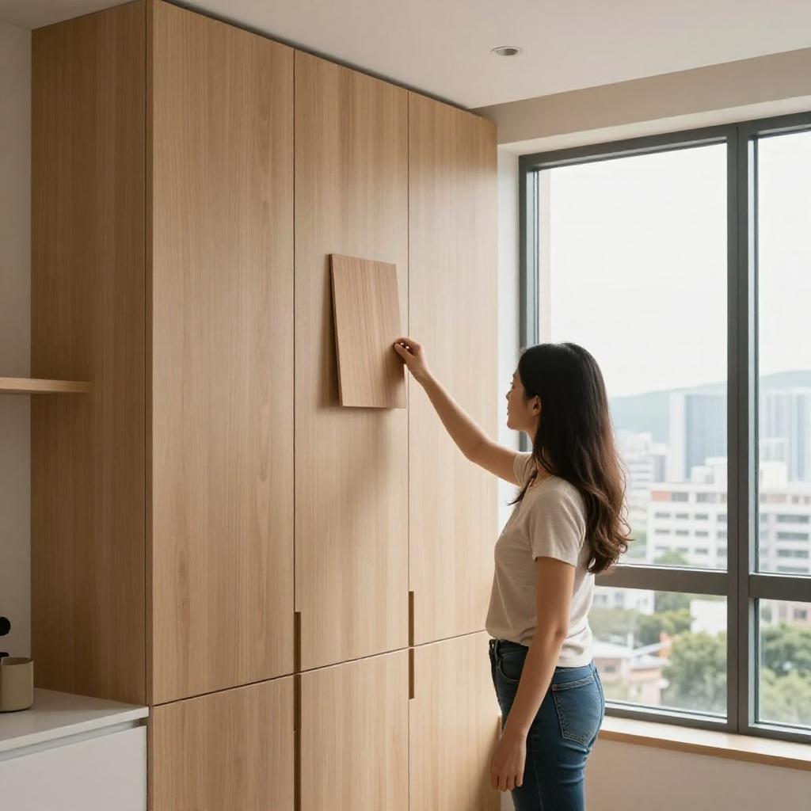
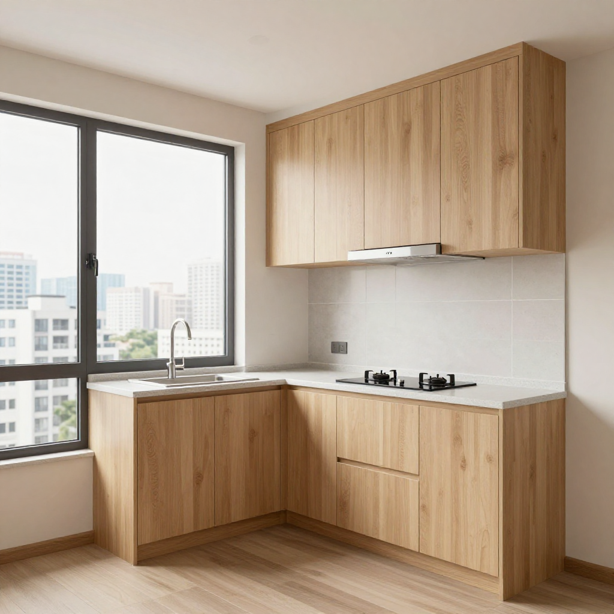
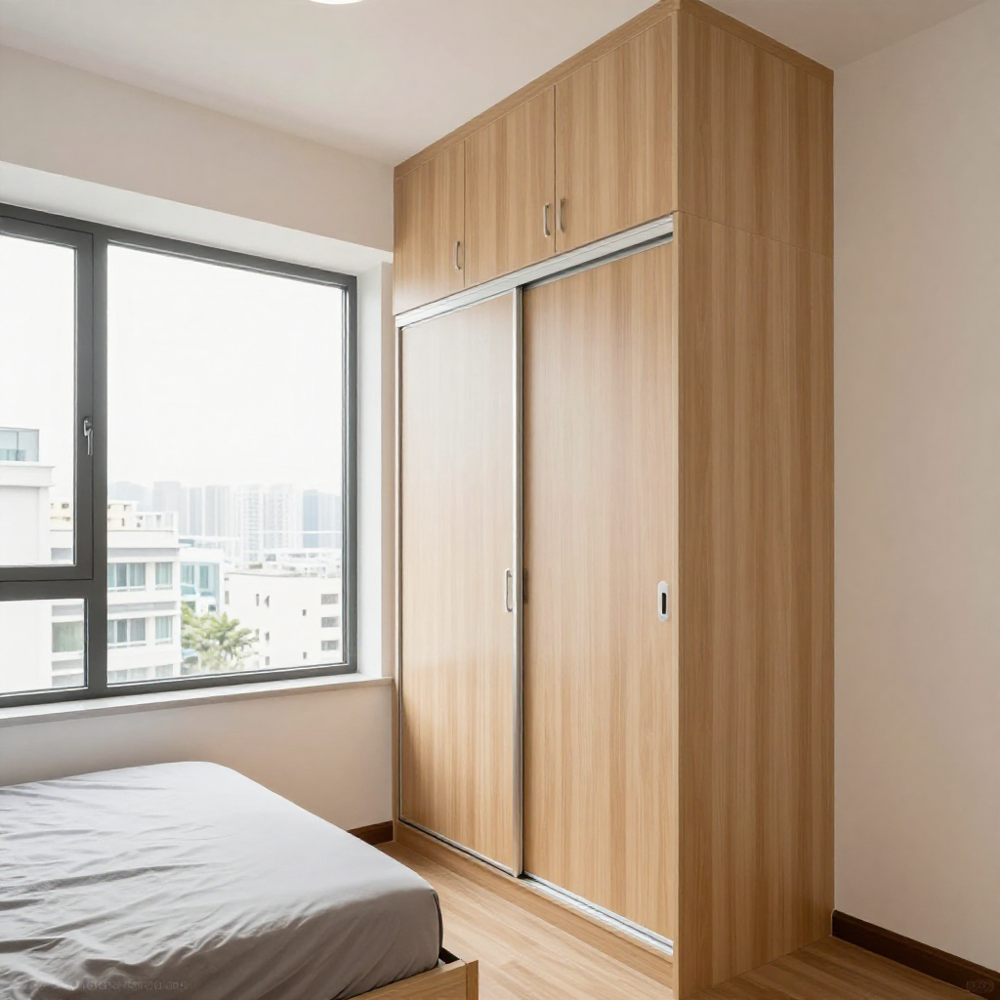

紅磡357呎兩房：淺木櫃唔係油白色就得，張丹楓教你揀啱色耐睇十年

📍 場景：紅磡357呎實用兩房｜主講：張丹楓（8年全屋定制）｜設計溝通：雲蕾｜老師傅：昌哥（28年經驗）｜WhatsApp 報價：852 5190 2328
序幕：UNY開幕日，𨋢口等到人癲
我係張丹楓，做咗8年裝修，專做香港小戶型定制家具。我太太雲蕾負責設計同客戶溝通，我負責工廠同現場安裝。今日呢單喺紅磡，357呎實用兩房，業主阿Yan同阿樂係後生夫婦，撞正將軍澳UNY開幕日，成棟樓𨋢都逼爆。
我哋老師傅昌哥今個秋啱啱28年，7點半就到咗現場，管理處阿姐仲掃緊大堂就同佢打招呼。呢啲老師傅，係我哋嘅定海神針——尺寸準唔準、收口靚唔靚，佢一眼就睇得出。
第一幕：全白定淺木？後生仔差啲揀錯
阿Yan阿樂一返嚟，手上拎住UNY開幕袋同一袋屈臣氏88折收納盒：「丹楓，盒我哋掃咗成袋，啱唔啱你個櫃用啊？」我笑住話盒買住先唔怕，但櫃做唔啱，買幾多盒都係亂。
「我哋就係驚咯，357呎咋，之前睇人哋話全屋油白色顯大，係咪真係咁？我哋係咪應該成間白晒佢？」
「白色係顯大，但成間死白一片，好似住樣板房咁凍冰冰。你哋呢個廳落地玻璃採光咁靚，雲蕾特登揀呢隻淺木暖色——反光冇白色咁刺眼，一樣拉高亮度，最緊要耐睇。」
「你摸下，暖啲㗎。香港啲樓廳細，白色櫃用兩年，廚房油煙一黐邊位就發黃。淺木紋少少污糟睇唔出，十年都唔殘。」
「後生仔聽住，屋企唔係展覽廳，唔使最貴最白，要最啱住。呢隻木色，晏晝太陽照落嚟成間屋暖笠笠，你哋放工返嚟坐低就知。」

第二幕：廚房吊櫃，唔到頂就係留位養污糟
講到廚房，阿樂即刻問吊櫃係咪真係要做到頂——「師奶話做到頂，拎嘢好麻煩。」昌哥帶佢哋入廚房，指住個頂慢慢講。
「你哋樓底得2.6米，吊櫃唔到頂，上面嗰20公分空隙，一年就係一層油加塵。你企張凳先抹到，抹一次鬧一次。做到頂上面封死，最高嗰格放一年用一次嘅煲，日日用嘅嘢放落嚟嗰格，咪搞掂囉。」
「香港屋企唔係大，係要唔好留死角藏污糟。吊櫃我哋用18mm E0多層實木夾板，門板淺木免漆，鉸鏈304不鏽鋼——廚房蒸氣大，鐵鉸兩年就鏽，到時門冧仲煩。」

第三幕：睡房趟門慳一呎，防潮功夫喺3mm
入到睡房，1.5米床擺完得返60公分行。昌哥推一推趟門衣櫃路軌，同阿Yan兩母女講 obrona。
「呢個位用掩門衣櫃，開門撞床。趟門貴少少，條路軌要師傅調得準，但慳返成呎位，瞓覺轉身都舒服啲。呢啲錢唔慳得。」
「我阿媽話，櫃背唔做防潮，好快發霉，係咪呃我？」
「你阿媽啱一半。紅磡近海，唔係塊板貴就得，係收口功夫：側板落地嗰3分打防潮玻璃膠，背板離牆留3mm透氣，濕氣先散到。你哋啲收納盒唔好貼死牆角放，留條罅。」

尾聲：叉燒飯同老火湯
中午樓下茶餐廳，阿樂請昌哥食咗個叉燒飯加杯凍檸茶。阿樂問UNY和牛85折去唔去，昌哥哈哈大笑：「我煎咩和牛，今晚返屋企老婆煲咗老火湯。做咗28年，我學識一樣嘢——屋企唔使最貴，要最啱住。」
357呎唔使羨慕千呎豪宅：櫃做啱位，光留得住，嘢收得齊。阿Yan望住晏晝太陽照喺淺木櫃上面，輕輕同阿樂講：「係喎，呢隻木色，真係好過全白。」昌哥飲啖凍檸茶冇出聲，心入面諗：又一間細屋，交得。
| 項目 | 規格 | 價錢 |
|---|---|---|
| 客廳淺木電視櫃連儲物 | 2.2米，免漆淺木紋 | $11,000 |
| 廚房到頂吊櫃連地櫃 | E0夾板+304鉸鏈 | $13,000 |
| 睡房趟門衣櫃 | 調校路軌+到頂 | $9,500 |
| 防潮收口+安裝 | 玻璃膠+3mm透氣+清垃圾 | $4,500 |
| 總計 | $38,000 |
呢個係2026年9月報價，板材五金價會浮動。記住三句：淺木唔怕黃先係長用色、吊櫃唔到頂等於養塵、防潮唔靠貴板靠收口3mm。
❓ 淺木櫃三問
Q1：細單位係咪一定要全白先顯大？
唔係。白色反光強但死白凍，淺木暖色一樣拉高亮度，有落地玻璃採光仲出暖光效果，而且耐污唔發黃，用十年都唔殘。
Q2：吊櫃做到頂係咪好難拎嘢？
最高嗰格放一年用一次嘅煲，日日用嘅放下面。唔到頂嗰20公分空隙一年一層油加塵，仲難搞。到頂封死先係懶人做法。
Q3：近海單位防潮靠咩？
唔靠買貴板，靠收口：側板落地打防潮玻璃膠、背板離牆3mm透氣、雜物唔貼牆角。三樣做齊，紅磡近海都唔驚。
提示：圖片為 SiliconFlow Z-Image-Turbo AI 生成的場景示意圖，不是實際住戶單位。價錢為2026年9月故事報價，實際以度尺為準。